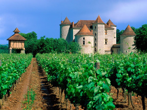
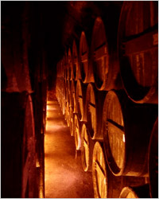
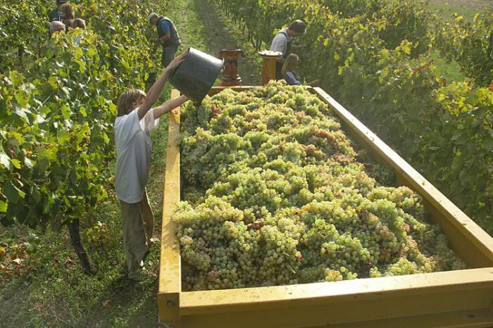
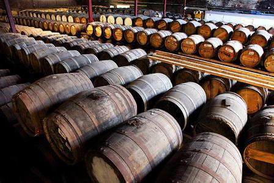
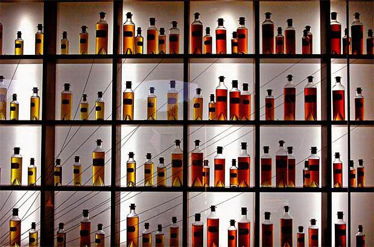
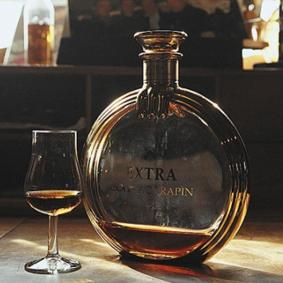
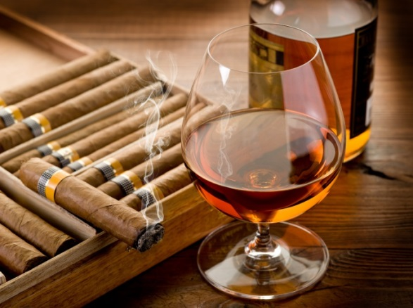
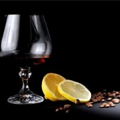

Коньяк
Своё название напиток коньяк получил по имени города Коньяк (фр. Cognac), региона Пуату — Шаранта, департамента Шаранта, Франция.
Известно, что ещё в I веке до нашей эры Юлий Цезарь покоряет Гол — территорию на западе нынешней Франции, превратив её в провинцию Сентонж. Префектом округа назначен римлянин Коню, давший имя городу Коньяк («Коню» + латинское «акум», город).
Город Коньяк, известный ещё с XI века как крупный центр по торговле солью, принимал и голландские корабли, которые перевозили соль из Франции в страны Северной Европы. Кроме соли, голландцы захватывали на борт и бочки с местным вином из «виноградников Пуату», которые стали пользоваться постоянным спросом.
К 16 веку количество производимого вина выросло настолько, что вино начинало портиться, а перевозка слабоалкогольного вина на кораблях была невыгодна – вино выдыхалось и теряло вкус. Тогда виноделы решили перегонять вино и получать из него винный спирт, который хранили в дубовых бочках. Вскоре было подмечено, что от долгого хранения в бочках спирт значительно улучшает свой вкус и аромат. Такой спирт предназначался для перевозки морским транспортом. Потом его разводили водой, и полученный напиток назывался брендуайн (brandjiwin).
Но это предыстория, без которой сложно понять, как всё-таки появился коньяк в его современном виде. Существует несколько легенд относительно любимого всеми напитка.

Одна из них повествует о шевалье де ла Круа (Chevalier de la Croix), который после службы в армии занялся перегонкой вина. Однажды, проснувшись после ночного кошмара, в котором дьявол варил его в двух котлах по очереди, шевалье решил применить двойное кипячение в производстве винного спирта. Этот процесс был призван улучшить качество вина. Изготовив 2 бочонка такого напитка, шевалье заглянул в гости к монахам Ренорвиля, где один бочонок был тут же выпит, а второй оставлен на сохранение до какого-нибудь достойного праздника. Поводов выпить принесённый шевалье напиток не было долгих 15 лет. Бочку открыли и были весьма удивлены тем, что его содержимое уменьшилось вдвое, а напиток приобрёл насыщенный вкус и пьянящий густой аромат.
По другой версии, в начале 17 века на одной из винных баз на французском побережье скопилось множество виноградной водки. Запертая в порту английским флотом водка простаивала в дубовых бочках, виноторговцы нервничали. Но как ни беспокоились торговцы, водка не испортилась, наоборот, от долгого стояния в бочках её вкус изменился. Оценив это свойство, водку стали специально выдерживать в бочках, выбор же древесины для бочек определила сама история. Готовясь к конфликту с Англией, Людовик 14 приказал высадить дуб в регионе Лимузен для строительства кораблей. Так как дуба выросло много, то и выбор материала для изготовления бочек был очевиден.
Теперь торговцы стали намеренно выдерживать коньяк в бочках длительное время, а также совершенствовать технологию купажирования напитка.
В ту пору коньяк перевозили исключительно в бочках, и имя производителя осталось неизвестным потребителю. Только к 1860 году коньяк начали поставлять в оригинальных бутылках, снабжённых этикетками. Это повлекло за собой создание предприятий по производству стеклотары, ящиков, пробок и даже типографии.
В наши дни торговля коньяком находится на подъёме. Франция остаётся общепризнанной страной классического производства коньяка, её опыт тщательно изучается и используется во многих странах мира.
Сбор урожая
Оптимальное время заготовки сырья для напитка – это середина осени. Для того чтобы получить настоящий коньяк французский, используются всего несколько сортов белого винограда. Из них наиболее распространенным считается Уньи Блан (Треббиано). Данный кислый сорт винограда имеет высокую урожайность, он медленно созревает, но довольно устойчив к болезням. Также могут быть использованы Коломбар, Фоль Бланш или Монтиль. Они позволяют коньяку приобрести новые вкусовые оттенки, однако очень сложны и капризны в выращивании.
Этапы производства
После того как урожай собран и привезен на специальные склады, начинают изготавливать лучшие французские коньяки. Рассмотрим этот процесс поэтапно:
- Отжим сока из винограда. Задействуются горизонтальные прессы, не дробящие косточки ягод. Традиционные винтовые категорически запрещены законодательством.
- Ферментация. Полученный сок на протяжении трех недель подвергается ферментации. При этом сахар не добавляется, чтобы не испортить качество коньячного спирта (это также запрещено). Полученное вино (с содержанием алкоголя 9 %) отправляется на дистилляцию.
- Получение первичного базового спирта (сырца). Это первый этап дистилляции, задающий будущему коньяку вкус и характер. Добывание 30%-го спирта осуществляется без фильтрации. Дистиллируется все вино, включая осадок.
- Получение итогового коньячного спирта высокого качества. Это вторичная дистилляция, разделяющая сырье на три фракции. Фракция 70% крепости (вторая) помещается в дубовые бочки, подвергается выдержке и становится самим коньяком.
Выдержка, или созревание, коньяка
Как известно, готовый спирт, полученный из виноградного сока, помещается в специальные бочки из дуба. Необходимо это для того, чтобы будущий коньяк наполнился дополнительными вкусовыми оттенками и ароматами, стал приятного золотистого цвета.
Дубовые бочки зачастую изготавливаются вручную, без нарушения целостности ствола дерева (это важно). После того как задана их форма, начинается обжиг. Таким образом размягчается структура дерева, а на внутренней поверхности бочки образуется небольшой слой жженого сахара, также влияющий на ароматические и вкусовые качества коньяка.
Созревать напиток должен не меньше двух лет, но и не больше 70. За первое время выдержки он извлекает из древесины необходимые дубильные вещества, сахара, аминокислоты, масла, смолы и ферменты. Надобности в увеличении срока созревания коньяка просто нет. После 70-летней выдержки его вкус остается практически неизменным.
Коньяк хранится в погребах. Сначала созревание происходит в бочках, а затем его разливают в стеклянные бутылки. Помимо выдержки и сортов используемого винограда различается французский коньяк (названия его) в зависимости от местности, где он был произведен.
По каким качествам разделяют коньяки?
Как мы уже сказали, основных критериев оценки напитка три: сорт винограда, местность и время выдержки. Если первые два будут прописаны на бутылке без сокращений, то в последнем есть свои особенности. Чем дольше созревал коньяк, тем он лучше. Однако законодательством было установлено, что контролировать выдержку коньяка свыше 6,5 лет сложно. Поэтому на сегодняшний день самыми распространенными считаются такие напитки:
- Very Special (V.S.) – минимальная выдержка (2 года).
- Superior – созревание не меньше трех лет.
- Very Superior Old Pale (V.S.O.P), Very Old (V.O.), Reserve – четырехлетняя выдержка.
- Very Very Superior Old Pale (V.V.S.O.P.) – созревание в течение 5 лет.
- Extra Old (X.O.) – выдержка более шести лет.
Согласно этим стандартам и классифицируется французский коньяк.
Названия - Napoleon, Royal, Tres и пр. - указывают на марку, а не на бренд. Существуют и напитки с выдержкой более семи лет, но их стоимость предельно высока, они считаются коллекционными.
Коньяк "Французский стандарт"
Это напиток, изготовленный по конкретной технологии, в соответствии со всеми присущими ей традициями. Название «Коньяк "Французский стандарт" 5 звезд» говорит о том, что этот напиток крепкий, терпкий на вкус благодаря выдержке V.S.O.P. Розлив данного бренди осуществляется на территории России, но исходные материалы могут быть использованы только оригинальные (т.е. из Франции). Во вкусе такого коньяка можно почувствовать фруктовые оттенки, теплые цветочные нотки. Послевкусие отдает медовым ароматом и изюмом. Цвет напитка можно разглядеть через прозрачное стекло бутылки – он должен быть медно-золотистым. Ему по праву можно дать название «французский коньяк», цена при этом у него значительно ниже. Объяснение простое - местный розлив, но никак не худшее качество.
Коньяк "Французский орден"
Помимо величайших французских производителей, в нашем государстве также имеются винодельческие заводы, выпускающие продукцию высокого качества, гораздо более доступную по цене. Одним из ярчайших примеров является г. Калининград. Именно здесь расположен завод, производящий лучшие марки коньяка, вина и различных настоек.
«Французский орден» - это напиток с пятью звездами. Данный коньяк выдерживается на протяжении пяти лет на территории нашей страны. Конечно, как и во всем мире, коньячный спирт поставляется из Франции, а вот розлив осуществляется у нас. Благодаря этому цена на хорошую продукцию существенно снижена, а вкус безупречен и неповторим.
Данный коньяк – напиток скорее для мужчин. Он довольно крепкий и жесткий. Прекрасной половине человечества лучше употреблять коньяк с меньшими годами выдержки, когда его вкус более нежный и мягкий. «Французский орден» красиво упакован, такой презент будет уместен по любому поводу.
"Годы - коньячное богатство"
Вплоть до момента создания Национального межпрофессионального бюро коньяка прочитать этикетку на бутылке коньяка было весьма непросто, потому что различные производители по-разному идентифицировали возраст коньячных спиртов. Чтобы разобраться в этом, рассмотрим, что происходит с коньячными спиртами в процессе выдержки. При выдержке коньяка происходит множество сложных химических реакций, в результате которых испаряются ряд летучих веществ, первоначально имевшихся в спирте, и собственно спирт, а также идет гидролиз и окисление некоторых веществ. Кроме того, из древесины бочек выделяются в спирт различные органические вещества. Скорость протекания всех этих процессов очень низкая, чем и обусловлены длительные сроки выдержки. Исходный коньячный спирт — бесцветная маслянистая жидкость, которой, впрочем, уже присущи тонкость вкуса, цветочные и фруктовые тона в аромате.
Через 6—8 месяцев спирт приобретает светло-золотистый цвет, в нем явственно ощущается запах дуба, однако нет впечатления его единства с исходными ароматами спирта. Через 18 месяцев (а в некоторых спиртах и позднее) начинаются удивительные превращения. Коньячный спирт становится более мягким, бархатистым и насыщенным по вкусу. Он приобретает цвет красного дерева, его ароматы, сохраняя многообразие цветочных и фруктовых запахов, обогащаются ванилью благодаря трансформации извлеченного из древесины дуба лигнина. Примерно через 6—8 лет начинает формироваться букет, в котором отчетливо ощущаются благородные тона запаха кожи, табака и меда.
Через 20 лет коньячный спирт, особенно из Шампани, приобретает особую бархатистость, полноту вкуса, букет становится интенсивным и сложным. Добавляются легкие тона засахаренного апельсина, смолы, грибов, подлеска. Появляется аромат рансио (rancio) — старого, чуть кислого вина, — слегка напоминающий запах лесного ореха и миндаля. Напиток приобретает «огненную» окраску.
Обозначения сроков выдержки (латиница)
Если в первые годы «взросления» коньячного спирта изменения в нем достаточно просто идентифицировать, то уже после выдержки в 10 лет подобная задача становится весьма затруднительной. Поэтому сложна и задача контроля качества напитка. По этой причине на сегодняшний день Национальное межпрофессиональное бюро коньяка использует следующие обозначения сроков выдержки коньяка:
- V.S. (Very Special) или Trois Etoiles ("Три звёздочки") - коньяки, имеющие выдержку в бочке не менее 2-х лет;
- V.S.O.P. (Very Superior Old Pale), V.O. (Very Old), Reserve - коньяки с выдержкой в бочке не менее 4-х лет;
- V.V.S.O.P. (Very-Very Superior Old Pale), Grande Reserve - коньяки с выдержкой в бочке не менее 5-и лет;
- X.O. (Extra Old), Napoleon, Extra, Tres Vieux, Vieille Reserve, Hors d'age - коньяки с выдержкой в бочке не менее 6-и лет.
Возраст коньячных спиртов исчисляется с 1 апреля года, следующего за годом сбора урожая винограда, а так как дистилляция начинается сразу после его сбора, реальный возраст коньячного спирта больше, чем указано на этикетке. Кроме того, производители всегда указывают па этикетке время выдержки гораздо меньшее, нежели реальный возраст использованных в купаже коньячных спиртов. Поэтому во многих случаях Х.О. на этикетке (особенно в случае престижных, элитных напитков) может означать сроки выдержки в несколько десятилетий.
Классы коньяка и "звездность"
Коньяк классифицируют по качеству. Выделяются следующие виды, или классы, коньяка:
ОРДИНАРНЫЙ. Такой коньяк готовится из коньячных спиртов, выдержанных от 3 до 5 лет.
- Коньяк *** (3 звездочки) - из спиртов, выдержанных не менее 3 лет, крепость - 40% объема. Имеет светло-соломенный цвет с характерным для молодого коньяка ароматом. Вкус слегка экстрактивный, приятный.
- Коньяк **** (4 звездочки) имеет возраст коньячных спиртов не менее четырех лет, крепость - 41%, сахаристость - до 1,5%. Он светло-соломенного цвета, букет и вкус слабо экстрактивный, приятного коньячного тона.
- Коньяк ***** (5 звездочек) - в купаже участвуют коньячные спирты пятилетней выдержки, крепость - 42%, сахаристость - до 1,5%. Обладает вкусом хорошо выдержанного, экстрактивного, приятного коньячного тона. Рейтинг показывает, что пятью звездами отмечают лучшие марки коньяка.
МАРОЧНЫЙ. Готовится из коньячных спиртов со средним сроком выдержки свыше 6 лет. Этот коньяк подразделяют на группы:
- КВ (коньяк выдержанный) - средний возраст спиртов от 6 до 7 лет, крепость - 42%.
- Коньяк категории КВВК (коньяк выдержанный высшего качества) - из коньячных спиртов, выдержанных от 8 до 10 лет, крепость - 43-45%.
- Группа коньяков категории КС и ОС (коньяк старый и очень старый) - из спиртов, выдержанных 10 лет и более, содержит 40-57% спирта.
Марочному коньяку присваивают определенные названия.
КОЛЛЕКЦИОННЫЙ. Коллекционный коньяк представляет собой марочный коньяк, дополнительно выдержанный в дубовых бочках свыше 5 лет.
Этикетка французского коньяка
Согласно законодательным актам, следующая информация, в обязательном порядке, должна присутствовать на лицевой и/или контрэтикетке бутылки с коньяком:
- Наименование (Cognac, Eau-de-vie de Cognac, Eau-de-vie des Charentes).
- Емкость (согласно Директиве Парламента и Совета ЕС 75/106/ЕЭС от 19 января 1974 года о сближении законодательства государств-членов, касающихся предварительной расфасовки по объёму жидкостей).
- Крепость (в % об.) (должна быть указана в поле зрения на лицевой или контрэтикетке).
- Юридическое название, адрес производителя или предприятия по розливу, зарегистрированного внутри Европейского Сообщества (согласно Директиве Парламента и Совета ЕС 2000/13/EC от 20 марта 2000 года по сближению законодательств государств-членов в отношении маркировки, внешнего вида и рекламы пищевых продуктов).
- Обязательное указание аппелясьона принадлежности (Fine Champagne Appellation Contrôlée, Grande Champagne Appellation Contrôlée, Petite Champagne Appellation Contrôlée и т. д.).
Правила выбора коньяка в магазине
- Задумываясь над тем, как выбрать коньяк, определитесь, в первую очередь, с местом покупки. Не покупайте коньяк в сомнительных магазинчиках. Доверяйте только проверенным супермаркетам или же специализированным магазинам.
- Так уж сложилось, что в постсоветских странах наиболее часто фальсифицируется именно коньяк.
- Будьте бдительны, чтобы не стать жертвой обмана.
Цена
Вы наверняка уже задумывались о том, как правильно выбрать коньяк, исходя из его цены. Все просто. Если вы увидели напиток десятилетней выдержки по сногсшибательно низкой цене, быстренько ставьте его назад на полку!
Запомните главное правило – хороший коньяк просто не может стоить дешево!
Бутылка
Бутылка коньяка должна быть целой и без повреждений. На ней не должно быть ни царапин, ни надколов, ни следов клея.
Колпачок бутылки
Колпачок бутылки должен быть хорошо зафиксирован. Если он недостаточно плотно прилегает, значит, пробка была завинчена вручную, а не на заводской автоматической установке.
Этикетка
- Наименование (должно быть прописано, что данный напиток – это именно коньяк).
- Объем бутылки.
- На лицевой части этикетки должно быть указано количество оборотов в процентах (крепость напитка).
- Адрес предприятия и его юридическое название.
- Принадлежность к апелласьону (например, Grande Champagne Appellation Contrôlée).
За контроль производства и розлива напитка отвечает НМБК (Национальное межпрофессиональное бюро коньяков).
Ни в коем случае на ней не должно быть информации о том, что в состав коньяка входят ректификационный спирт или ароматизаторы. Что делать в последнем случае, вы уже знаете – немедленно поставить коньяк назад на полку!
Совет. Кстати, есть несложный способ для определения качества этого благородного напитка. Нужно просто перевернуть бутылку вниз горлышком. Если коньяк выдержанный, то капли со дна бутылки будут тяжело падать вниз. Если невыдержанный, то он быстро стечет по стенкам.
Возраст
Классификация коньяка отечественными производителями отличается от мировой. В постсоветских странах коньяки делят на ординарные (3-5 лет, сколько звездочек – таков и возраст коньяка), марочные (более 6 лет) и коллекционные (те же марочные, которые предварительно продержали около 3-х лет в дубовых бочках).
Как выбрать коньяк, произведенный за рубежом? Согласно мировой классификации, существуют пять классов коньяков: V.S. (более 2 лет выдержки), Superior (больше 3 лет), V.S.O.P. (не меньше 4 лет), V.V.S.O.P. (выдержка – более 5 лет), X.O. (более 6 лет выдержки).
Совет. Хороший коньяк должен быть прозрачным. Налейте напиток в соответствующий бокал и прикоснитесь к стеклу пальцем. Если отпечаток пальца виден с другой стороны бокала, то коньяк хорошего качества.
Запах
Хороший коньяк легко отличить по запаху. Качественный напиток не должен пахнуть ни керосином, ни растворителем, ни явными ароматизаторами. К сожалению, прямого ответа на вопрос, как правильно выбрать коньяк, этот совет не даст. Разве что вы запомните, какой коньяк хороший, а какой нет, на будущее.
Вкус
Как выбрать коньяк, мы уже практически знаем. Мы уже выучили, каким должен быть этот напиток на вид и на запах.
Каким же он может быть на вкус? Дело в том, что вкус коньяка зависит от бочки, в которой он хранился. А потому напиток может быть самых разных оттенков вкуса – резким и мягким, жгучим и фруктовым, древесным и сливовым, с привкусом сигар, грибов и даже какао.
Вот мы и выучили, как правильно выбрать коньяк. Дело осталось за малым – применить на практике новые знания и насладиться приятным напитком. Как говорится, с хорошим коньяком, как и с умным человеком, — никогда не бывает скучно.
Как правильно пить коньяк?
Настоящий коньяк принято пить не торопясь. Ни в коем случае его нельзя пить залпом, как водку. Ведь уметь правильно пить коньяк – это хороший пример образованности и интеллигентности.
Коньяк принято пить в кругу близких людей, в скромной обстановке. Коньяк не принято ничем закусывать.

Настоящий ценитель коньяка начинает наслаждаться этим напитком с момента открытия бутылки. Коньяк должен постоять в открытой посуде – бутылке или декантере (специальном графине с крышкой, который создан для аэрации напитка). Аэрация коньяка избавляет его от чужеродных запахов и делает его вкусовые и ароматические оттенки богаче и выразительнее, даже если напиток не из категории «люкс».
Одна из самых главных составляющих коньяка – это его аромат. Коньяк наливается в специальные бокалы, называемые снифтерами (от английского слова sniff – нюхать). Снифтер имеет форму пузатой, сужающейся кверху рюмки на ножке. Снифтеры изготавливают разной вместимости – от 70 до 400 граммов. Коньяк в такой бокал наливается максимум по уровень самой широкой части. При дегустациях используются рюмки меньшие по размерам, более вытянутые, но все равно зауженные сверху.
Налейте немного (30-40 мл) коньяка в бокал и дотроньтесь пальцем до его наружной стенки. Обратите внимание, видны ли отпечатки пальцев на другой стороне бокала. Если видны, то Вы держите в своих руках коньяк отличного качества. Далее начните вращать бокал вокруг собственной оси и проследите за тем, как стекает коньяк по внутренним стенкам бокала. Если следы от коньяка задерживаются на стенках пять секунд, то перед Вами коньяк пяти-восьми летней выдержки. Если пятнадцать секунд, то коньяк двадцатилетней выдержки. Для более выдержанных коньяков (пятидесятилетних) следы будут оставаться в течение восемнадцати секунд.

У коньяка есть три этапа запаха. Первый этап, это, как правило, тонкие ванильные тона, можно уловить на расстоянии 5 см от краев бокала. У края бокала Вы почувствуете легкие цветочные или фруктовые ароматы. Последний этап – это запахи выдержки. Вкусив все виды ароматов, маленьким глоточком попробуйте напиток на вкус, и обратите внимание, как он «раскрывается» во рту.
Подавать коньяк следует чуть выше комнатной температуры. Бокал с коньяком греть только в ладонях. Греть коньяк над огнем – признак дурного тона. Коньяк принято пить после ужина, перед подачей чая или кофе, потому что невозможно почувствовать вкус и аромат коньяка, если пить его во время еды.
Пить коньяк по-французски – значит, поддерживаться правилу ССС (Cafe, Cognac, Cigare). То есть сначала выпиваете кофе, затем коньяк и потом закуриваете сигару. Сейчас становится популярным смешивать коньяк со льдом и мартини, подавая его в качестве аперитива.
Для приготовления коктейлей используется коньяк малой выдержки, так как такой коньяк наиболее удачно сочетается с кофе, сливками, мороженым, соками, ликерами и газированными напитками.
Интересные факты
Коктейль «Идиот»:
- 50 г. Hennessy X.O.
- 100 г. Колы
Знаменитый коктейль коньяк с колой хорошо знаком всем без исключения барменам. Существует байка, что история про коктейль «Идиот» вполне реальна и случилась в эпоху суровых 90-х в одном успешном столичном ресторане (название его слишком известно, чтобы называть вслух). Так вот, легенда гласит, что классический «новый русский» однажды посетил питейное заведение в компании крашеной блондинки с характерными нижними конечностями, берущими начало в районе коренных зубов. Увешанный цепями (общий вес превышает размер золотого резерва небольшого государства) господин на вопрос услужливого сомелье « Что пить будем?» заказал бутылку коньяка неприлично большой выдержки и еще менее приличной стоимости. Дама сердца выбор одобрила и поддержала. Но когда напиток был подан на стол в соответствии со всеми правилами, спутница счастливого обладателя малинового пиджака впала в праведный гнев и обвинила сотрудников ресторана в отсутствии хороших манер: коньяк ей принесли без кока-колы и льда. Адская смесь прелестной деве была тут же доставлена, но коньяк с колой прочно зафиксировался в истории как коктейль «Идиот». Хотя если уж придерживаться этой версии происхождения, пойло должно было бы зваться «Идиотка».
Есть одно сомнительное сочетание – коньяк плюс лимон. Считается, что моду на закусывание лимоном ввел Николай II. Российский император впервые попробовал крепкий напиток и ощутил необходимость заесть его чем-нибудь, но кроме нарезанного лимона под рукой ничего не оказалось.
Так и родилась эта традиция, которую не признают настоящие любители элитного алкоголя.
И вот почему: шикарное послевкусие коньяка, которое ценится не менее его аромата, полностью забивается лимоном. Если хотите закусить коньяк, возьмите шоколад или икру.
И если до сих пор вы не поняли, как и с чем правильно пить коньяк, прислушайтесь к мнению Мориса Хеннесси, который сказал: «Пить коньяк лучше всего в чистом виде. Он слишком хорош сам по себе».